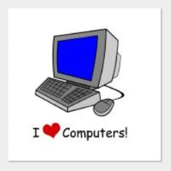

My love for Computers and the internet

I love computers. The are the only way that we as humans can communicate today, especially because of COVID-19. Online virtual learning has been taking place, such form of learning would not be possible without computers. Computers allow people to interact learn and have fun. Without computers the world would be soo boring. It is the main way most people entertain them sleaves today. They entertain themselves by watching YouTube videos, going on social media, and much more. I am obsessed with leaning about computers because I want to learn more one of the most important things in peoples lives today. It can easily be said, especially with COVID-19 most people spend more times on their computers than they do with their families. This is because they use computers to do everything That includes learning, having fun, talking to people through zoom and other online platforms, etc. it is absolutely tur that computers play a pivotal role in our live and we should study them to them improve them, by consequence help improve our lives. I believe that computers should be developed so them our live scan become more relaxing and fun. I cannot wait to see where computers will go!!!!